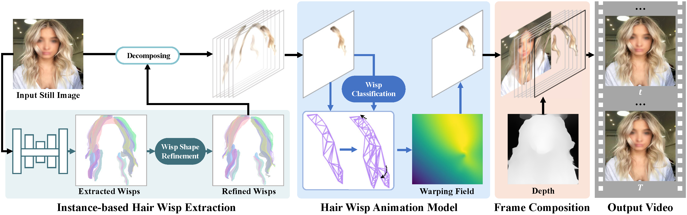
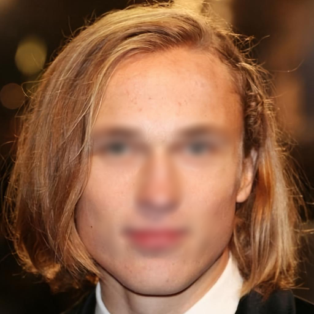
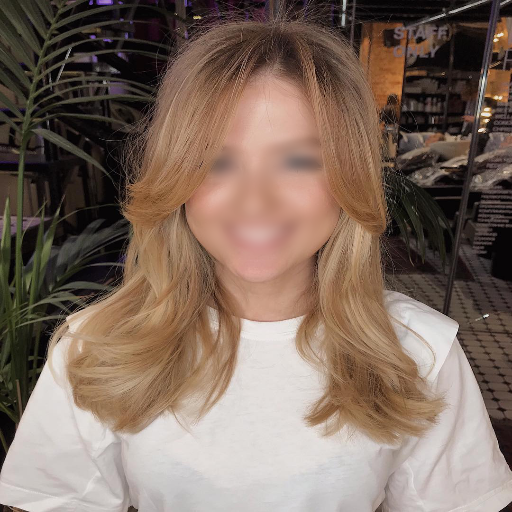

We propose a novel approach to animate human hair in a still portrait photo. Existing work has largely studied the animation of fluid elements such as water and fire. However, hair animation for a real image remains underexplored, which is a challenging problem, due to the high complexity of hair structure and dynamics. Considering the complexity of hair structure, we innovatively treat hair wisp extraction as an instance segmentation problem, where a hair wisp is referred to as an instance. With advanced instance segmentation networks, our method extracts meaningful and natural hair wisps. Furthermore, we propose a wisp-aware animation module that animates hair wisps with pleasing motions without noticeable artifacts.
Click to Play the Animations!
Methodology
Our framework consists of three steps, as shown in the following figure.
First, we propose an Instance-based Hair Wisp Extraction (IHWE) which automatically extracts hair units named hair wisps that are locally grouped and would move consistently in a generated video, without relying on complex hair capture systems or user assistance.
Second, we propose a hair wisp animation module to animate hair wisps by predicting the spatiotemporal evolution of a hair wisp.
Third, with the animated hair wisps, we generate an animated video by fusing animated hair wisps.

Quantitative Comparisons
Click to Play the Animations!
Qualitative comparisons of our approach with single-image-to-video generation methods.
The contributions of our instance-based hair wisp extraction module.
Input
w/o IHWE w FF
Ours

Visual comparison of the contributions of hair wisp animation module.
Input
w/o HWA
Ours

Extension Applications
Cloth Blowing
Anime Hair Blowing
Combination to Background Flowing
BibTeX
@inproceedings{hairAni,
title={Automatic Animation of Hair Blowing in Still Portrait Photos},
author={Wenpeng Xiao and Wentao Liu and Yitong Wang and Bernard Ghanem and Bing Li},
booktitle={ICCV},
year={2023}
}
Project page template is borrowed from DreamBooth.